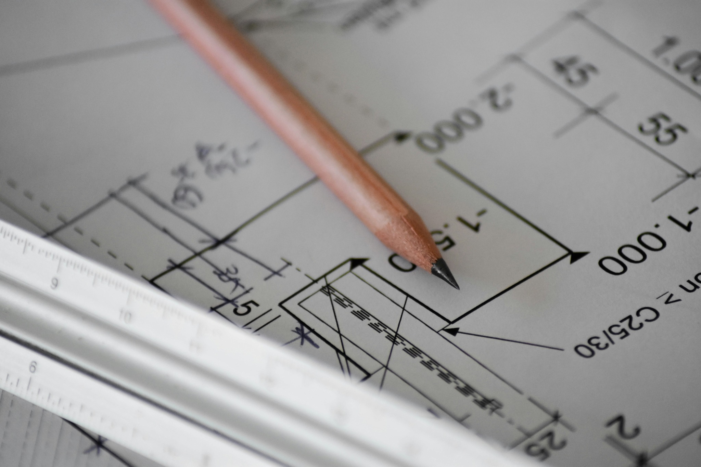

01
Drawing amendments
Update an existing drawing from redline markups, correct dimensions, revise notes or produce an updated issue.
Explore service →Independent CAD & Technical Drawing Services
Providing 2D CAD drawings, steelwork and fabrication detailing, technical drawing support and 3D modelling for architects, engineers, contractors, fabricators and local tradespeople.

Illustrative photograph — not a client project.
What I do
From a joinery workshop detail to a revised fabrication drawing or a simple 3D model, every assignment is considered individually and quoted against an agreed brief.
Update an existing drawing from redline markups, correct dimensions, revise notes or produce an updated issue.
Explore service →Turn a hand sketch, measured layout or reference PDF into a clean, editable CAD drawing.
Explore service →Prepare practical manufacturing and fabrication drawings from a supplied and agreed design.
Explore service →Who it is for
For businesses with occasional drafting requirements that don't justify a permanent CAD resource.
How it works
Share a sketch, PDF, dimensions, photos or existing CAD files.
Confirm outputs, assumptions, checks, quotation and timescale.
The drawing or model is prepared and checked against the agreed information.
Receive the agreed PDF, DWG, DXF or model files.
Clear pricing
I focus on manageable, clearly specified drafting assignments. Every project is quoted individually, with the deliverables, revision allowance and realistic timescale agreed in advance.
How pricing works →Common first projects
Ideal for a first project: limited scope, clear inputs and a defined result. Fixed-price quotes where the information is sufficient.
Start small
Send a short brief and any available sketches or drawings. I'll confirm whether the project fits my services and availability before providing a quotation.